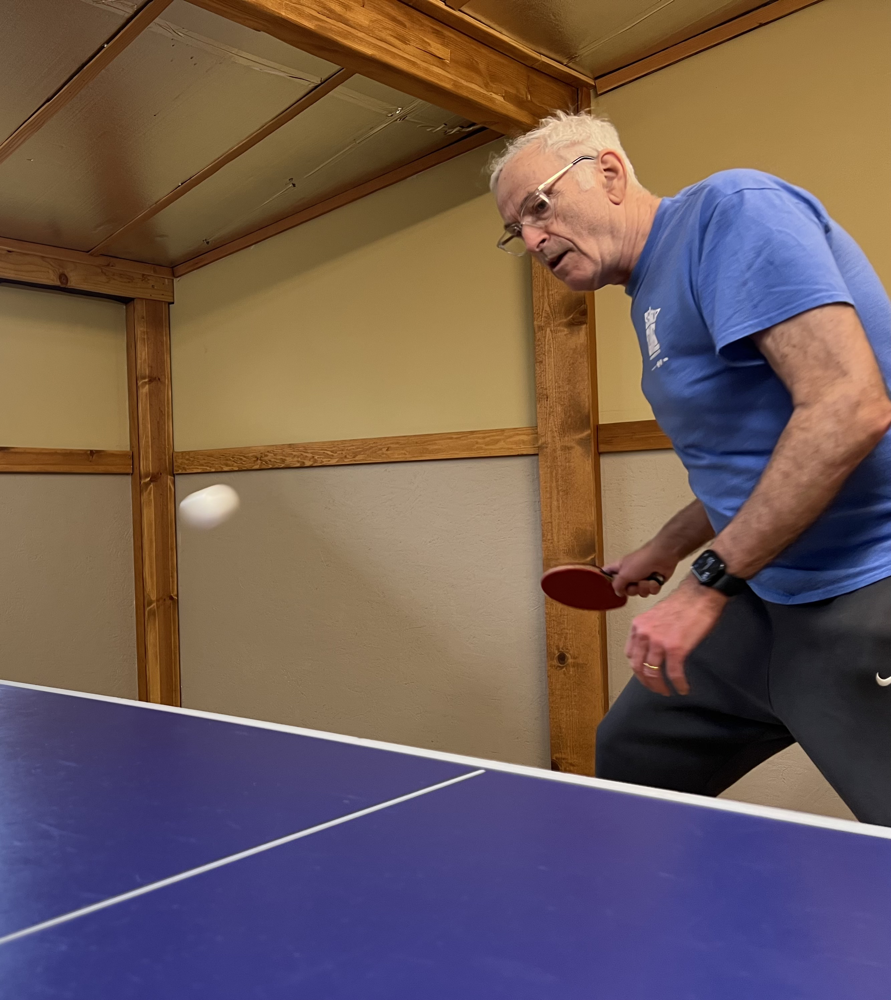
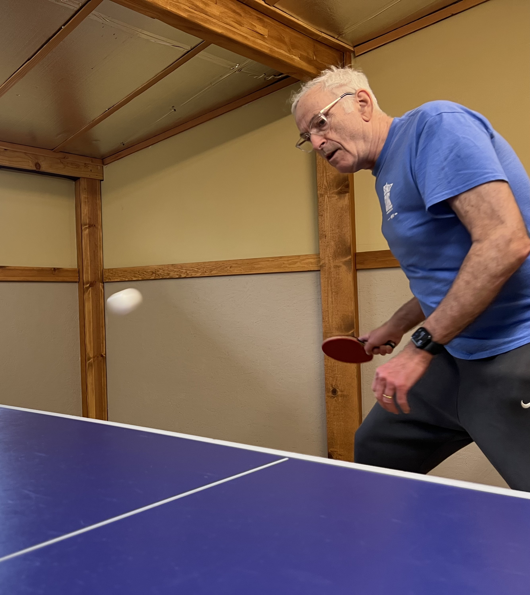

The Bellingham Table Tennis Club is a club of dedicated table tennis (ping pong) players from Whatcom and Skagit Counties in Washington State. Several times every week our diverse group of intermediate and advanced players play at a private facility. We practice informal skill-building drills and play competitive matches.
Interested players at the intermediate or advanced levels are welcome to drop in and test their skills in our friendly setting. Contact phone numbers are 360-421-3994 (Doug) and 763-377-6027 (Peter).


 
